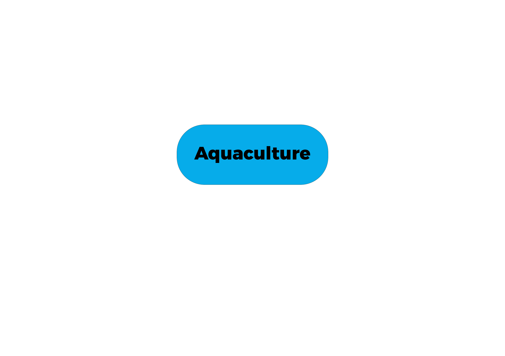

|
|
|
|
 |
 |
Africa's agriculture is a tapestry of traditions, innovations, challenges, and opportunities. Across the continent, from the fertile plains of East Africa to the vast savannas of the Sahel, agriculture sustains livelihoods, feeds communities, and drives economic development. However, its journey is one marked by both resilience and adaptation in the face of numerous hurdles.
Diversity in Practice:
The agricultural landscape in Africa is as diverse as its people and landscapes. Traditional farming methods, often passed down through generations, still form the backbone of agricultural production in many regions. Subsistence farming, characterized by small-scale family operations, remains prevalent, particularly in rural areas where access to modern technology and resources is limited.
Yet, alongside these traditional practices, modern agricultural techniques are gaining ground. Large-scale commercial farming enterprises, equipped with advanced machinery and technology, are emerging in some areas, contributing to increased productivity and economic growth. Additionally, there's a growing focus on sustainable agriculture, with initiatives promoting agroecology, conservation farming, and organic production methods gaining traction.
Facing Challenges:
Despite its potential, African agriculture faces significant challenges that hinder its growth and development. Climate change poses a particularly pressing threat, with erratic weather patterns, prolonged droughts, and extreme temperatures disrupting agricultural activities and threatening food security. Inadequate infrastructure, including poor transportation networks and limited access to markets, also impedes the sector's ability to thrive.
Moreover, smallholder farmers, who constitute the backbone of Africa's agricultural workforce, often lack access to essential resources such as credit, fertilizers, and improved seeds. Land tenure issues, gender disparities, and political instability further exacerbate these challenges, underscoring the need for comprehensive and sustainable solutions.
Seizing Opportunities:
Amidst these challenges, there are signs of hope and progress. African governments, alongside international organizations and NGOs, are increasingly prioritizing agriculture as a key driver of economic development and poverty alleviation. Investments in infrastructure, irrigation systems, and agricultural research are being made to enhance productivity and resilience in the face of climate change.
Furthermore, technological innovations, such as mobile applications for weather forecasting and market information, are empowering farmers with valuable knowledge and resources. Partnerships between public and private sectors are fostering entrepreneurship and innovation in agribusiness, creating new opportunities along the agricultural value chain.
Towards a Sustainable Future:
As Africa's population continues to grow, the importance of agriculture in ensuring food security and sustainable development cannot be overstated. Embracing climate-smart agricultural practices, promoting inclusive policies, and investing in education and training for farmers are essential steps towards building a resilient and vibrant agricultural sector.
Additionally, addressing systemic issues such as land tenure reform, gender equality, and access to finance will be crucial in unlocking the full potential of African agriculture. By harnessing the continent's rich agricultural heritage and embracing innovation, Africa can chart a course towards a more prosperous and sustainable future for its people and the planet.
Conclusion:
In conclusion, while challenges persist, Africa's agriculture is a story of resilience, adaptation, and untapped potential. With concerted efforts and investments, it can not only feed its growing population but also emerge as a global leader in sustainable and inclusive agricultural development.

Copyright 2024 by Nathan Kibatu